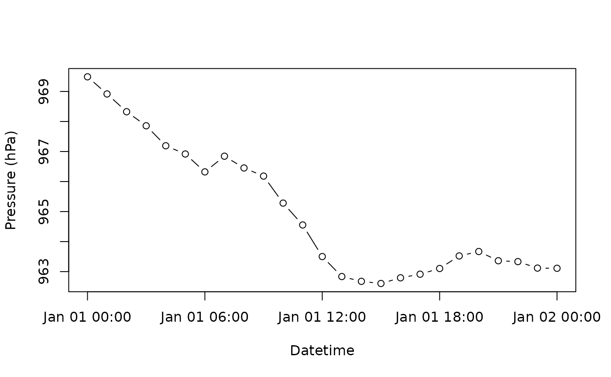
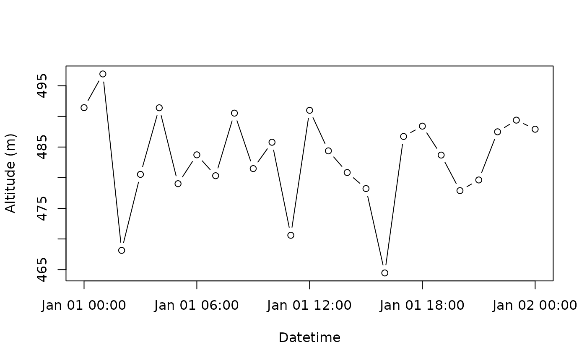

Request and download pressure timeseries at a given location
Source:R/geopressure_timeseries.R
geopressure_timeseries.RdThis function returns the surface atmospheric pressure timeseries from ERA5 at any requested location.
If the location queried is over water, the location will be moved to the closest onshore location.
The ERA5 pressure timeseries of the response \(P_{ERA}\) will be provided on a hourly basis
between start_time and end_time or the same as pressure$date if pressure is supplied.
If you supply the pressure of the geolocator \(P_{gl}\), the function will
additionally return the altitude of the geolocator above sea level \(z_{gl}\) using the
barometric equation,
$$ z_{{gl}}(x)=z_{ERA5}(x) + \frac{T_{ERA5}(x)}{L_b} \left( \frac{P_{gl}}{P_{ERA5}(x)}
\right)^{\frac{RL_b}{g M}-1},$$
where \(z_{ERA}\), \(T_{ERA}\), and \(P_{ERA}\) respectively correspond to the ground level
elevation, temperature at 2m, and ground level pressure of ERA5, \(L_b\) is the standard
temperature lapse rate, \(R\) is the universal gas constant, \(g\) is the gravity constant
and \(M\) is the molar mass of air. See more information at
the GeoPressureAPI documentation.
To be able to compare the temporal variation of the retrieved pressure of ERA5 \(P_{ERA}\) to
the geolocator pressure \(P_{gl}\), the function also returns the ERA pressure normalized with
the geolocator mean pressure measurement as pressure_era5_norm.
$$ P_{ERA5,0}(\boldsymbol{x})[t] = \left( P_{ERA5}(\boldsymbol{x})[t]-P_{gl}[t]\right) -
\left( \frac{1}{n}\sum_{i=1}^{n} P_{ERA5}(\boldsymbol{x})[i]-P_{gl}[i] \right).$$
Usage
geopressure_timeseries(
lat,
lon,
pressure = NULL,
start_time = NULL,
end_time = NULL,
timeout = 60 * 5,
quiet = FALSE,
debug = FALSE
)Arguments
- lat
Latitude to query (0° to 90°).
- lon
Longitude to query (-180° to 180°).
- pressure
A data.frame of pressure timeseries, containing at least a
"date"and"value"column.- start_time
If
pressureis not provided,start_timedefines the start time of the timeseries as POSIXlt.- end_time
If
pressureis not provided,end_timedefines the end time of the timeseries as POSIXlt.- timeout
Duration before the code is interrupted both for the request on GeoPressureAPI and on GEE (in seconds, see
httr2::req_timeout()).- quiet
logical to hide messages about the progress
- debug
logical to display additional information to debug a request
Value
A data.frame containing
datePOSIXct date timepressure_era5pressure (hPa)lonsame as inputlonexcept if over waterlatsame as inputlatexcept if over water.pressure_era5_normonly ifpressureis provided as inputaltitudeonly ifpressureis provided as input
References
Nussbaumer, Raphaël, Mathieu Gravey, Martins Briedis, and Felix Liechti. 2023. Global Positioning with Animal‐borne Pressure Sensors. Methods in Ecology and Evolution, 14, 1118–1129 https://doi.org/10.1111/2041-210X.14043.
See also
Other pressurepath:
plot_pressurepath(),
pressurepath2altitude(),
pressurepath_create(),
pressurepath_update()
Examples
# Request pressure at a given location
pressurepath <- geopressure_timeseries(
lat = 46, lon = 6,
start_time = "2017-01-01 00:00",
end_time = "2017-01-02 00:00",
quiet = TRUE
)
str(pressurepath)
#> 'data.frame': 25 obs. of 4 variables:
#> $ date : POSIXct, format: "2017-01-01 00:00:00" "2017-01-01 01:00:00" ...
#> $ pressure_era5: num 969 969 968 968 967 ...
#> $ lat : num 46 46 46 46 46 46 46 46 46 46 ...
#> $ lon : num 6 6 6 6 6 6 6 6 6 6 ...
plot(pressurepath$date, pressurepath$pressure,
type = "b", ylab = "Pressure (hPa)", xlab = "Datetime"
)

# Retrieve the altitude of a bird being at this location adding random noise on the sensor.
pressurepath <- geopressure_timeseries(
lat = 46, lon = 6,
pressure = data.frame(
data.frame(
date = pressurepath$date,
value = pressurepath$pressure_era5 + rnorm(nrow(pressurepath))
)
),
quiet = TRUE
)
str(pressurepath)
#> 'data.frame': 25 obs. of 7 variables:
#> $ date : POSIXct, format: "2017-01-01 00:00:00" "2017-01-01 01:00:00" ...
#> $ pressure_tag : num 970 968 968 969 966 ...
#> $ pressure_era5 : num 969 969 968 968 967 ...
#> $ altitude : num 478 489 485 473 495 ...
#> $ lat : num 46 46 46 46 46 46 46 46 46 46 ...
#> $ lon : num 6 6 6 6 6 6 6 6 6 6 ...
#> $ pressure_era5_norm: num 970 969 968 968 967 ...
plot(pressurepath$date, pressurepath$altitude,
type = "b", ylab = "Altitude (m)", xlab = "Datetime"
)
